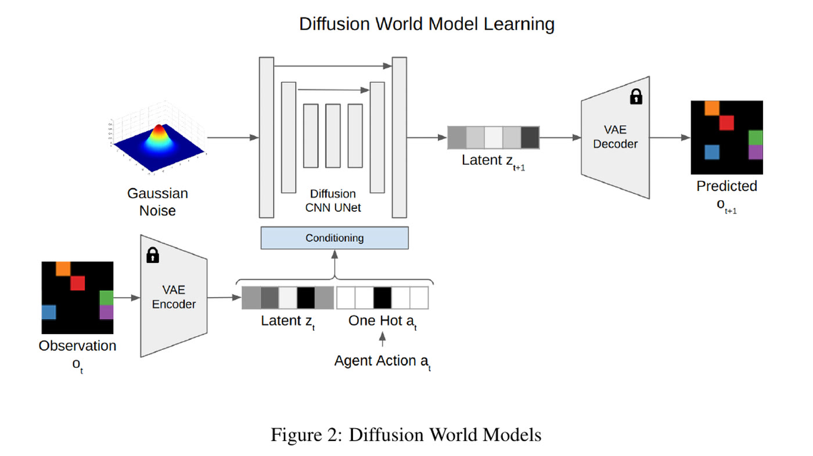
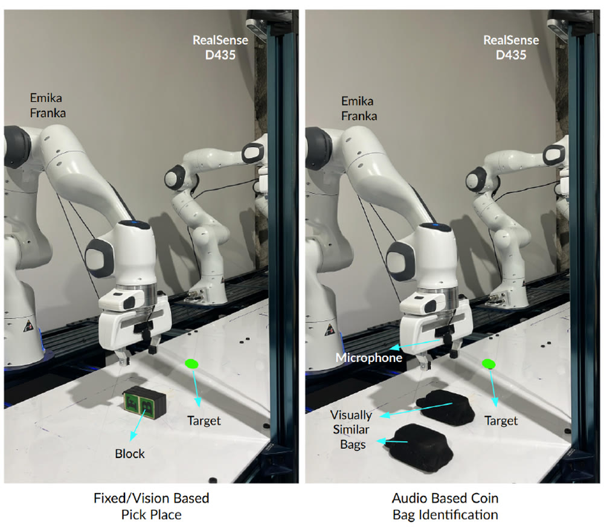
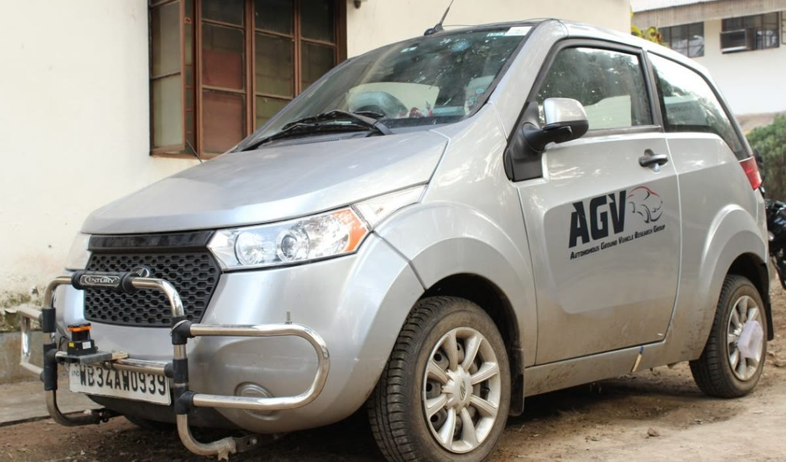

FeaturedHardware
PIVot
A two-level system: short-horizon visuomotor specialists trained with ACT, and an LLM above them deciding which one to run next and when it has failed. Runners-up at the Physical AI Hack.
Everything I have built, from a self-fabricated ground vehicle to an autonomous lunar excavator to world models that let a robot plan its way out of its own mistakes. Filter by what you care about.
A two-level system: short-horizon visuomotor specialists trained with ACT, and an LLM above them deciding which one to run next and when it has failed. Runners-up at the Physical AI Hack.
Point it at a research repository that stopped working years ago and it reconciles that repo with a current one, then rewrites its own playbook from the mistakes it made doing it.
A learning-to-search method: at every control step the robot searches over imagined latent rollouts for a correction to its own plan, so it can notice it is going wrong mid-episode and steer back. It beats diffusion policies trained on 5 to 10x more data.

A diffusion model used as the latent transition function of a world model, on top of a frozen VAE, so open-loop rollouts still decode into images you can actually look at.
DreamerV3 adapted for F1Tenth racing, trained on one simulated track from raw LiDAR, then driven on a physical 1/10-scale car with no real-world fine-tuning and no hyperparameter retuning.
An autonomous excavator that builds berms out of lunar regolith simulant: a bucket drum that shaves material continuously to hold ground reaction forces low, and a planner that decides where to dig and in what order.

A diffusion policy conditioned on vision, gripper-mounted contact audio and joint states, aimed at the moments in a manipulation task when the camera cannot see what matters.
The planner behind LunAR-X: given a set of excavation zones and a berm to build, decide what to dig, where to dump it, and in what order. Two levels, task sequencing above and hybrid A* motion planning below, minimizing the energy a lunar rover spends driving.
A Franka arm that builds Jenga towers from a pile of blocks, and, more usefully, notices when a grasp has gone wrong and retries instead of building on the mistake.
A mask-aware perceptual loss that pushes latent diffusion to render human faces and poses properly, with no pose skeleton or segmentation map required at generation time.
A terrace farming robot that lifts itself up 40 cm steps on a pair of scissor lifts, then plows, sows, rolls, waters and sprays the terrace it just climbed onto.
A warehouse picking system designed for Flipkart's national robotics challenge: a 6-DOF arm sized from its own kinematics and torque analysis, a gripper built around the product mix, and grasp selection on a segmented point cloud. Second in the country out of more than 6500 teams.
Five path-tracking controllers implemented, tuned and benchmarked against each other on identical courses: first in Gazebo, then on a real electric car.

The car the path-tracking work ran on. Mahindra handed thirteen finalist teams a drive-by-wire e2o and asked them to make it drive itself; ours ran on the roads of IIT Kharagpur's campus.
Extracting lane geometry and stop lines from grass, gravel and faded paint, running onboard in real time as the perception layer underneath EKLAVYA.
A ground vehicle built from bare frame to full autonomy stack by a student team, and runner-up at the Intelligent Ground Vehicle Challenge in Michigan two years running.
Nothing matches that filter yet.